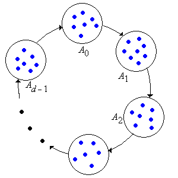
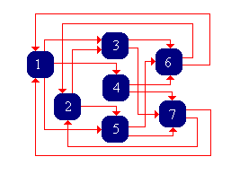

Suatu keadaan dalam rantai Markov waktu diskret bersifat periodik jika himpunan waktu kembali positifnya tidak kosong dan mempunyai faktor persekutuan terbesar yang lebih besar dari 1. Perilaku periodik mempersulit kajian perilaku limit rantai. Seperti yang akan kita lihat dalam bagian ini, perilaku periodik dapat dihilangkan dengan meninjau rantai \( d \)-langkah, dengan \( d \in \N_+ \) sebagai periodenya, tetapi hal ini harus dibayar dengan munculnya kelas-kelas komunikasi tambahan. Jadi, dalam arti tertentu, kita dapat menukar satu bentuk kerumitan dengan bentuk lainnya.
Teori Dasar
Definisi dan Hasil Dasar
Seperti biasa, titik awal kita adalah rantai Markov waktu diskret \( \bs{X} = (X_0, X_1, X_2, \ldots) \) (homogen terhadap waktu) dengan ruang keadaan (terhitung) \( S \) dan matriks probabilitas transisi \( P \).
Periode keadaan \( x \in S \) adalah \[ d(x) = \gcd\{n \in \N_+: P^n(x, x) \gt 0 \} \] dengan konvensi \(\gcd\varnothing=0\). Keadaan \(x\) dengan \(d(x)=0\) bukan keadaan periodik maupun aperiodik. Keadaan \( x \) bersifat aperiodik jika \( d(x) = 1 \) dan periodik jika \( d(x) \gt 1 \).
Jika \(d(x)\ge 1\), setiap waktu kembali positif ke \(x\) habis dibagi \(d(x)\), dan \(d(x)\) adalah faktor persekutuan terbesar semua waktu tersebut. Jika \(d(x)=0\), tidak ada waktu kembali positif ke \(x\). Hasil yang mungkin paling penting ialah bahwa periode, seperti status rekuren atau transien, merupakan sifat kelas yang dimiliki bersama oleh semua keadaan dalam kelas ekuivalensi menurut relasi komunikasi.
Jika \( x \leftrightarrow y \), maka \( d(x) = d(y) \).
Rincian:
Misalkan \( x \leftrightarrow y \). Hasilnya langsung jika \( x = y \), sehingga kita mengasumsikan \( x \neq y \). Ingat bahwa terdapat \( j, \, k \in \N_+ \) sedemikian sehingga \( P^j(x, y) \gt 0 \) dan \( P^k(y, x) \gt 0 \). Namun, \( P^{j+k}(x, x) \ge P^j(x, y) P^k(y, x) \gt 0 \), sehingga \( d(x) \mid (j + k) \). Misalkan sekarang \( n \) adalah bilangan bulat positif dengan \( P^n(y, y) \gt 0 \). Maka \( P^{j+k+n}(x, x) \ge P^j(x, y) P^n(y, y) P^k(y, x) \gt 0 \), sehingga \( d(x) \mid (j + k + n) \). Dengan demikian, \( d(x) \mid n \). Berdasarkan definisi periode, \( d(x) \mid d(y) \). Dengan menukar peran \( x \) dan \( y \), kita juga memperoleh \( d(y) \mid d(x) \). Jadi, \( d(x) = d(y) \).
Dengan demikian, definisi periode, periodik, dan aperiodik berlaku bagi kelas komunikasi maupun keadaan individual. Ketika rantai tak tereduksi, istilah-istilah ini dapat diterapkan pada keseluruhan rantai.
Misalkan \( x \in S \). Jika \( P(x, x) \gt 0 \), maka \( x \) (dan dengan demikian kelas komunikasi dari \( x \)) bersifat aperiodik.
Rincian:
Berdasarkan asumsi, \( 1 \in \{n \in \N_+: P^n(x, x) \gt 0\} \), sehingga faktor persekutuan terbesar himpunan ini adalah 1.
Tentu saja, pernyataan sebaliknya tidak berlaku. Sebuah contoh penyangkal sederhana diberikan dalam contoh rantai tiga keadaan.
Kelas Siklik
Misalkan sekarang \( \bs{X} = (X_0, X_1, X_2, \ldots) \) tak tereduksi dan periodik dengan periode \( d \). Pembahasan berikut berlaku untuk rantai tak tereduksi. Untuk rantai tereduksi, argumen yang sama dapat diterapkan secara terpisah pada setiap kelas komunikasi tertutup yang tak tereduksi; pembatasan pada kelas yang tidak tertutup umumnya hanya menghasilkan matriks substokastik. Pemaparan akan menjadi lebih mudah dan jelas jika kita mengingat relasi ekuivalensi kongruensi modulo \( d \) pada \( \Z \), yang pada gilirannya didasarkan pada urutan parsial keterbagian. Untuk \( n, \, m \in \Z \), \( n \equiv_d m \) jika dan hanya jika \( d \mid (n - m) \); secara ekuivalen, \( n - m \) merupakan kelipatan bulat dari \( d \); dan secara ekuivalen pula, \( m \) dan \( n \) memiliki sisa yang sama setelah dibagi dengan \( d \). Fakta dasar yang akan kita perlukan ialah bahwa \( \equiv_d \) dipertahankan dalam penjumlahan dan pengurangan. Artinya, jika \( m, \, n, \, p, \, q \in \Z \), \( m \equiv_d n \), dan \( p \equiv_d q \), maka \( m + p \equiv_d n + q \) dan \( m - p \equiv_d n - q \).
Sekarang, tetapkan suatu keadaan acuan \( u \in S \), dan untuk \( k \in \{0, 1, \ldots, d - 1\} \), definisikan \[ A_k = \{x \in S: P^{n d + k}(u, x) \gt 0 \text{ untuk suatu } n \in \N\} \] Artinya, \( x \in A_k \) jika dan hanya jika terdapat \( m \in \N \) dengan \( m \equiv_d k \) dan \( P^m(u, x) \gt 0 \).
Misalkan \( x, \, y \in S \).
- Jika \( x \in A_j \) dan \( y \in A_k \) untuk \( j, \, k \in \{0, 1, \ldots, d - 1\} \), maka \( P^n(x, y) \gt 0 \) untuk suatu \( n \in \N \) dengan \( n \equiv_d k - j \).
- Sebaliknya, jika \( P^n(x, y) \gt 0 \) untuk suatu \( n \in \N \), maka terdapat \( j, \, k \in \{0, 1, \ldots, d - 1\} \) sedemikian sehingga \( x \in A_j \), \( y \in A_k \), dan \( n \equiv_d k - j \).
- Himpunan-himpunan \( (A_0, A_1, \ldots, A_{d-1}) \) mempartisi \( S \).
Rincian:
Pertama, misalkan \( x \in A_k \). Berdasarkan definisi, \( u \) dapat mencapai \( x \) dalam \( m \) langkah untuk suatu \( m \equiv_d k \). Karena rantai tak tereduksi, \( x \) dapat kembali ke \( u \), misalkan dalam \( p \) langkah. Dengan demikian, \( u \) dapat kembali ke \( u \) dalam \( m + p \) langkah. Namun, karena \( u \) berperiode \( d \), harus berlaku \( m + p \equiv_d 0\), sehingga \( p \equiv_d -k \).
Selanjutnya, misalkan \( x \in A_j \) dan \( y \in A_k \). Kita mengetahui bahwa \( u \) dapat mencapai \( x \) dalam \( m \) langkah untuk suatu \( m \equiv_d j \), dan kini kita mengetahui bahwa \( y \) dapat mencapai \( u \) dalam \( p \) langkah untuk suatu \( p \equiv_d -k \). Karena rantai tak tereduksi, \( x \) dapat mencapai \( y \), misalkan dalam \( n \) langkah. Dengan demikian, \( u \) dapat kembali ke \( u \) dalam \( m + n + p \) langkah. Sekali lagi, karena \( u \) berperiode \( d \), berlaku \( m + n + p \equiv_d 0 \), sehingga \( n \equiv_d k - j \).
Selanjutnya, perhatikan bahwa karena rantai tak tereduksi dan karena \(\{0, 1, \ldots, d - 1\}\) adalah himpunan semua sisa modulo \( d \), harus berlaku \( \bigcup_{i=0}^{d-1} A_i = S \). Misalkan \( x, y \in S \) dan \( P^n(x, y) \gt 0 \) untuk suatu \( n \in \N \). Maka \( x \in A_j \) dan \( y \in A_k \) untuk suatu \(j, \, k \in \{0, 1, \ldots, d - 1\}\). Berdasarkan argumen yang sama seperti pada paragraf sebelumnya, harus berlaku \( n \equiv_d k - j \).
Yang tersisa hanyalah menunjukkan bahwa himpunan-himpunan tersebut saling lepas, dan pembuktiannya kembali menggunakan argumen yang sama. Misalkan \( x \in A_j \cap A_k \) untuk suatu \( j, \, k \in \{0, 1, \ldots, d - 1\} \). Maka \( u \) dapat mencapai \( x \) dalam \( m \) langkah untuk suatu \( m \equiv_d j \), dan \( x \) dapat mencapai \( u \) dalam \( n \) langkah untuk suatu \( n \equiv_d - k \). Dengan demikian, \( u \) dapat kembali ke \( u \) dalam \( m + n \) langkah. Karena rantai berperiode \( d \), berlaku \( m + n \equiv_d 0 \), sehingga \( j - k \equiv_d 0 \). Karena \( j, \, k \in \{0, 1, \ldots, d - 1\} \), diperoleh \( j = k \).
\( (A_0, A_1, \ldots, A_{d-1}) \) adalah kelas-kelas komunikasi bagi relasi komunikasi \( d \)-langkah \( \underset{d}{\leftrightarrow} \) yang mengatur rantai \( d \)-langkah \( (X_0, X_d, X_{2 d}, \ldots) \) dengan matriks transisi \( P^d \).
Himpunan-himpunan \( (A_0, A_1, \ldots, A_{d-1}) \) dikenal sebagai kelas siklik. Struktur dasar rantai ditampilkan dalam diagram keadaan di bawah ini:

Contoh dan Kasus Khusus
Rantai Markov Berhingga
Pertimbangkan rantai Markov dengan ruang keadaan \( S = \{a, b, c\} \) dan matriks transisi \( P \) berikut:
\[ P = \left[\begin{matrix} 0 & \frac{1}{3} & \frac{2}{3} \\ 0 & 0 & 1 \\ 1 & 0 & 0 \end{matrix}\right] \]- Buatlah sketsa graf keadaannya dan tunjukkan bahwa rantai tersebut tak tereduksi.
- Tunjukkan bahwa rantai tersebut aperiodik.
- Perhatikan bahwa \( P(x, x) = 0 \) untuk semua \( x \in S \).
Rincian:
- Graf keadaan memiliki himpunan sisi \( E = \{(a, b), (a, c), (b, c), (c, a)\} \).
- Perhatikan bahwa \( P^2(a, a) \gt 0 \) dan \( P^3(a, a) \gt 0 \). Jadi, \( d(a) = 1 \) karena 2 dan 3 relatif prima. Karena rantai tak tereduksi, rantai tersebut aperiodik.
Pertimbangkan rantai Markov dengan ruang keadaan \( S = \{1, 2, 3, 4, 5, 6, 7\} \) dan matriks transisi \( P \) berikut:
\[ P = \left[\begin{matrix} 0 & 0 & \frac{1}{2} & \frac{1}{4} & \frac{1}{4} & 0 & 0 \\ 0 & 0 & \frac{1}{3} & 0 & \frac{2}{3} & 0 & 0 \\ 0 & 0 & 0 & 0 & 0 & \frac{1}{3} & \frac{2}{3} \\ 0 & 0 & 0 & 0 & 0 & \frac{1}{2} & \frac{1}{2} \\ 0 & 0 & 0 & 0 & 0 & \frac{3}{4} & \frac{1}{4} \\ \frac{1}{2} & \frac{1}{2} & 0 & 0 & 0 & 0 & 0 \\ \frac{1}{4} & \frac{3}{4} & 0 & 0 & 0 & 0 & 0 \end{matrix}\right] \]- Buatlah sketsa graf keadaannya dan tunjukkan bahwa rantai tersebut tak tereduksi.
- Tentukan periode \( d \).
- Tentukan \( P^d \).
- Identifikasi kelas-kelas sikliknya.
Rincian:
-
Graf keadaan 
Graf menunjukkan busur langsung 1 ke 3, 4, dan 5; 2 ke 3 dan 5; masing-masing dari 3, 4, dan 5 ke 6 dan 7; serta masing-masing dari 6 dan 7 ke 1 dan 2. Melalui lapisan-lapisan itu, setiap keadaan dapat mencapai setiap keadaan lain, sehingga rantai ini tak tereduksi.
- Periode 3
- \[ P^3=\begin{bmatrix} \frac{71}{192}&\frac{121}{192}&0&0&0&0&0\\ \frac{29}{72}&\frac{43}{72}&0&0&0&0&0\\ 0&0&\frac7{18}&\frac1{12}&\frac{19}{36}&0&0\\ 0&0&\frac{19}{48}&\frac3{32}&\frac{49}{96}&0&0\\ 0&0&\frac{13}{32}&\frac7{64}&\frac{31}{64}&0&0\\ 0&0&0&0&0&\frac{157}{288}&\frac{131}{288}\\ 0&0&0&0&0&\frac{37}{64}&\frac{27}{64} \end{bmatrix}. \]
- Kelas siklik: \( \{1, 2\} \), \( \{3, 4, 5\} \), \( \{6, 7\} \)
Model Khusus
Model-model khusus berikut dipelajari dalam bagian tersendiri:
- Rantai Ehrenfest dasar berperiode 2, sedangkan rantai Ehrenfest yang dimodifikasi bersifat aperiodik.
- Gerak acak sederhana pada \( \Z^k \), dengan \(k\in\N_+\), bersifat periodik dengan periode 2.